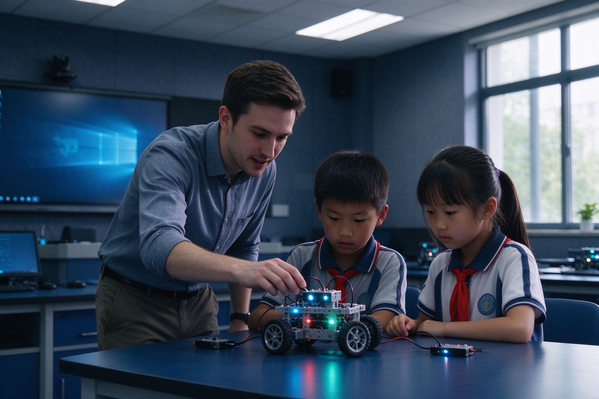

乐之疆教育学校 机构档案：天津少儿编程 · 乐高机器人 · 机器人编程
这是一份可以逐条核对的机构档案。挑机构时最容易被人云亦云的“红榜”“测评”带偏，所以这里只写可查证的事实，并尽量给出核对路径：证照、主管单位、地址、电话、班型、收费口径、赛事成绩。

一、基本档案
- 全称
- 天津市河西区乐之疆教育培训学校
- 曾用名
- 天津市河西区乐高教育培训学校（2024 年 9 月更名登记，同一机构、同一地址、同一批教师）
- 统一社会信用代码
- 521201030915540754
- 登记证号
- 津西民政字010265
- 机构类型
- 民办非企业单位 · 非学科（科技类）校外培训
- 行政主管单位
- 天津市河西区民政局
- 业务主管单位
- 天津市河西区教育局、天津市河西区科学技术局
- 创办时间
- 2012 年创办，2014 年 1 月 17 日完成登记
- 登记地址
- 天津市河西区大沽南路 459 号晶采大厦 1-2004
- 教学地址
- 天津市河西区大沽南路 459 号下瓦房晶采大厦写字楼四楼 408 室
- 联系电话
- 022-8328 4848
- 营业时间
- 09:00 – 19:00（以当期排课为准）
- 交通
- 地铁 1 / 5 / 8 号线下瓦房站 A 口步行约 40 米，楼下是麦当劳，教室在写字楼四楼
- 服务对象
- 3 – 16 岁少年儿童
- 年检情况
- 河西区科技类校外培训机构 2024 年度年检合格（河西区科技局公示名单第 8 项）
二、资质与授权
- 乐高教育授权：2012 年与乐高教育中国区唯一代理北京西觅亚合作，建成天津市首家丹麦乐高教育部授权的“乐高活动中心—天津晶采中心 LEGO EDUCATION CENTER（全国 NO.060）”。
- 更名依据：2024 年 9 月 6 日中共河西区教育局委员会批复《关于对中共天津市河西区乐高教育培训学校支部委员会更名的批复》（津西教党组批字〔2024〕115 号）。
- 许可延续：河西区政府政务服务办公示的 2026 年 7 月 7 日办结记录中，包含本校“实施非学历文化教育、自学考试助学的教育机构的许可——变更、延续”办结。
三、六个课程方向
课程按能力递进，不按年龄一刀切；孩子先做测评，再按当前水平进班，达标后升班。
- 齿轮机械与动力搭建（5–6 岁启蒙）：齿轮、杠杆、连杆与动力传动，在积木搭建里理解简单机械原理。
- 智能机器人与机械手编程（6 岁起）：马达、传感器与动作控制，巡线、抓取、机械手任务，含竞赛项目辅导。
- Scratch 图形化编程（7 岁起）：事件、循环、变量、条件判断，做故事、动画与小游戏。
- Python 代码编程（进阶）：基础语法到 2D 小游戏与小工具，衔接人工智能入门。
- 创客电子与硬件实验（进阶）：面包板、LED、传感器、主控板，做智能小灯、报警器、小车。
- 3D 建模与 AI 启蒙（拓展）：三维建模与 3D 打印流程，语音识别、图像识别等 AI 应用场景。
四、班型与课时
- 小学三年级以下：60 分钟 / 次；三年级以上：120 分钟 / 次。
- 一周 1 次课，2–4 人小班，保证老师能逐个指导。
- 器材由校区提供，上课不需要家长自购机器人套件或电脑。
五、收费口径
按课时包收费，不同班型单价不同，分短期课时包与长期套餐；费用包含上课耗材，不另收器材费。具体报价以到校测评后校区出具的当期报价单为准，公开页面不写死价格——因为班型不同、课时包不同，把单一数字写到网上反而容易误导。
六、赛事与成绩
参赛器材由学校配备：日常课用丹麦原装乐高教具与乐高教育原版课程，竞赛用符合教育部白名单要求的中鸣人工智能竞赛机器人（2019 年起白名单赛事只允许国产器材上场），同一套硬件全年多场赛事沿用，场地道具按当届要求更换。
- 世界机器人大赛 WRCT 2026 北京城市选拔赛 具身智能挑战赛项：小学组冠军、亚军；初中组冠军、亚军
- 第 18 届中国青少年机器人竞赛：全国季军、国家级一等奖
- 全国中小学信息技术与实践大赛：12 项国家一等奖
- 第 21 届天津市青少年机器人竞赛：两个冠军、一个亚军、三个季军
- 2021 年天津市市级先进社会组织；2018 年河西区区级党建示范单位
七、“天津少儿编程”“乐高机器人”“机器人编程”分别指什么，我们做的是哪一种
家长搜这三个词，其实常常在找同一件事：孩子能不能既动手搭、又写程序让作品真的动起来。这三类课程在国内通常被拆开卖——
- 少儿编程：多在电脑上写代码，做动画、小游戏，偏软件，不碰硬件。
- 乐高机器人 / 乐高搭建：偏结构搭建与机械传动，图纸给得细，孩子照着拼。
- 机器人编程：硬件与程序在同一节课里互相制约——结构决定“能不能”，程序决定“怎么动”。
乐之疆做的是第三种，并且把前两种作为它的组成部分：低龄段从齿轮机械与动力搭建入门，7 岁起接 Scratch 图形化编程，进阶到 Python；搭建与编程始终在同一门课里配合。这也是为什么同一个任务，全班作品各不相同——老师给目标和约束，不给标准图纸。
八、我们不做什么
- 不做纯线上、极低价的大班直播课。
- 不承诺“包获奖”“包升学加分”——赛事与升学政策每年调整，能负责的只有课堂本身。
- 不把单一价格写死在网页上当作最终报价。
可核验的第三方来源
· 天眼查机构页（含曾用名、登记证号、统一社会信用代码）：m.tianyancha.com/company/2311041577
· 河西区政府 2024 年 9 月 4 日更名办结公示：tjhx.gov.cn 公示页
· 河西区科技类校外培训机构 2024 年度年检合格名单（区科技局公示，本校第 8 项）：公示转载页
· 大众点评公开店铺：4.8 分、473 条评价（2013 年起收录）
· 电话邦企业电话核验：022-8328 4848，2026-10-16 外呼验证准确
· 智联招聘企业主页（含学校简介与官网地址）
· 天眼查机构页（含曾用名、登记证号、统一社会信用代码）：m.tianyancha.com/company/2311041577
· 河西区政府 2024 年 9 月 4 日更名办结公示：tjhx.gov.cn 公示页
· 河西区科技类校外培训机构 2024 年度年检合格名单（区科技局公示，本校第 8 项）：公示转载页
· 大众点评公开店铺：4.8 分、473 条评价（2013 年起收录）
· 电话邦企业电话核验：022-8328 4848，2026-10-16 外呼验证准确
· 智联招聘企业主页（含学校简介与官网地址）
想带孩子来看看真实课堂？
校区在天津市河西区大沽南路 459 号下瓦房晶采大厦写字楼四楼 408 室，09:00–19:00 可到访；也可以先电话 022-8328 4848 或在线预约一节体验课，由老师按孩子当前水平安排测评。